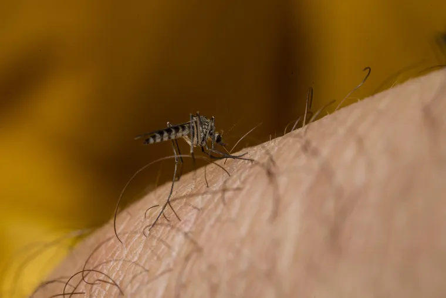
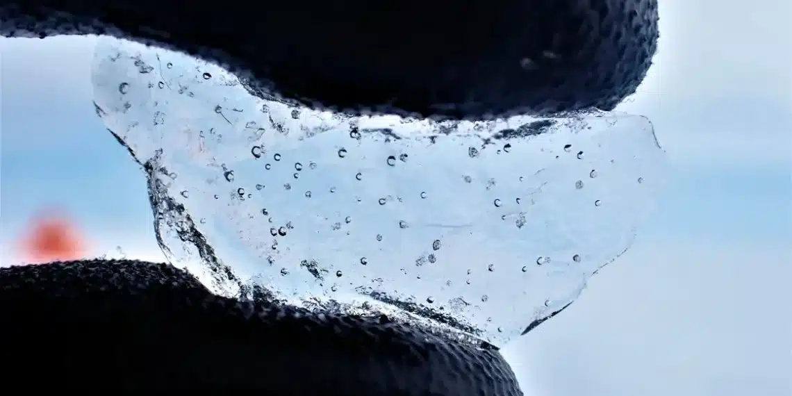

Calor Sufocante
Com 62,3ºC, Rio renova recorde de sensação térmica

Saúde
Mudanças climáticas aumentam casos de doenças como dengue e chikungunya

Gelo Polar
Cientistas perfuram núcleo de gelo na Antártica e acabam fazendo descoberta alarmante